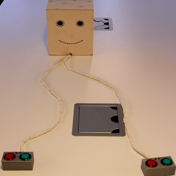
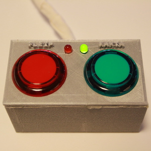
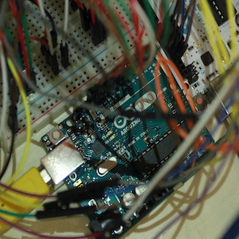
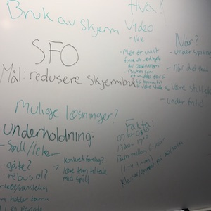
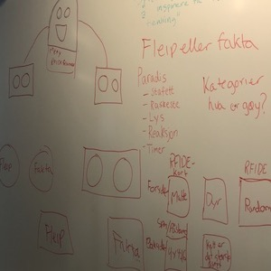
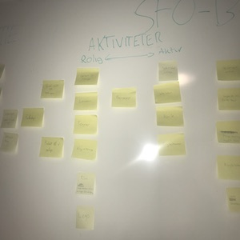

Et gruppeprosjeket på skolen hvor vi skulle lage noe med bruk av arduino, uten bruk av skjerm Vår brukergruppe var SFO, men det vi lagde kom også til nytte for de ansatte på SFO som var en viktig datakilde. I tillegg til designe og lage et fysisk prototype, skrev vi en full rapport om prosessen. Hovedansvaret mitt var datainnsamlinger og jeg var kontaktpersonen med brukergruppen.
Intervju ble mest brukt som datainnsamlingsmetode. Deres "skjermfrie dager" inspirerte vår ide og vår problemstilling: "Hvordan underholde barn på SFO uten bruk av skjerm?" Vi valgte å utforme et spill som kunne minske skjermtid, samtidig at det hjelper de ansatte ved at barna er roligere. Intervju er en god datainnsamlings metode som åpner opp for ulike typer spørsmål og vi kan få både kvantitativ og kvalitativ data Vår brukergruppe består av barn, som gjorde at vi måtte passe på at interjvu og evalueringer var utformet på en enkel og forståelig. Vi samlet inn data fra SFO ansatte og SFO barn, før vi begynte å utforme et spill og startet prototype. Lage fysiske prototyper var en morsom og kreavtiv del av prosjektet. Brukere testet våre lavoppløslige papp prototyper og vi fikk nyttig tilbakemeldinger. Den foretrukkete løsninger ble senere en mer høyoppløselig prototype. Videre jobbet vi med å gjøre spillet mer intuitivt og testet det igjen med knapper, lys og lyd.
Sluttproduktet var et "fleip eller fakta" spill. Her scanner spillerne et spørsmålskort og svarer ved å trykke på grønn eller rød knapp for enten fakta eller fleip på egne kontrollere. Robot "gamemasteren" har led-lys som lyser opp en timer og deretter grønn eller rød for å indikere om svaret er fakta eller fleip. Kontrolleren lyser grønn for riktig svar og rødt for feil. Ved å benytte oss av et kjent konsept gjorde det lettere for brukere å forstå spillet vårt.
Som mitt første prosjekt i bacheloren var dette prosjektet utfordrende, men samtidig veldig spennende. Med ulike utfordringer lærte vi i etterkant masse om planlegging og tidplanlegging, samt legge til rette for et bra sammarbeid Prosjekter går ikke alltid som planlagt, og vi ble da nødt til å tenke nytt å finne andre løsninger for problemer som oppsto. Sammarbeid er en viktig del av et prosjekt og jeg sitter igjen med gode erfaringer og vi jobbet godt sammen for å få ferdig prosjektet. All lærdommen fra dette prosjektet var nyttig å ta med seg videre. I tillegg lærte jeg masse om arduino og prototyping med 3D printing og modellering.